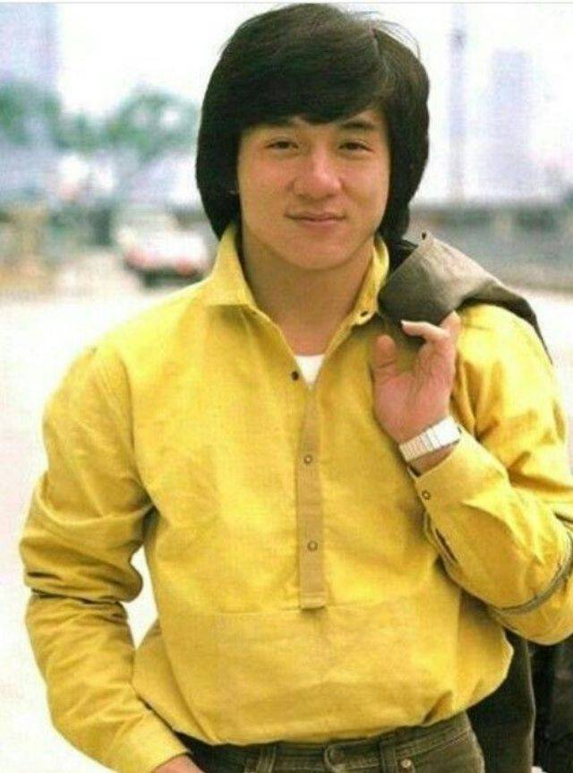
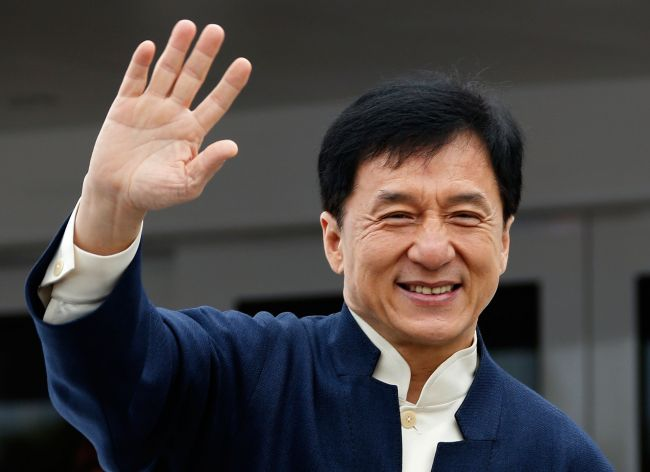
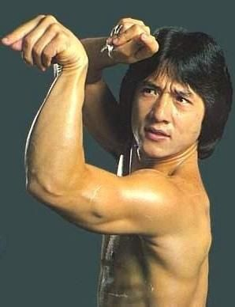

Джекі Чан
Дже́кі Чан (англ. Jackie Chan, ім'я при народженні: кит. 陳港生, пін. Chén Gǎngshēng Чень Ганшен, що в перекладі: «Чан,
народжений в Гонконгу», нар. 7 квітня 1954, Сполучене королівство) — гонконзький, китайський та американський
кіноактор, режисер, продюсер, каскадер, сценарист і співак. Почав свою акторську кар'єру в 1962 році і продовжує
досі зніматись у фільмах. Володар почесної премії «Оскар» за видатні заслуги в кінематографі 2016 року.



Дитинство
Народився 7 квітня 1954 року на Піку Вікторія в Гонконгу з ім'ям Конг-сан (мандаринською
Чень Ганшен), що в
перекладі означає Народжений у Гонконгу. Його батьками були: Чарльз (англ. Charles Chan, 1914—2008) і Лі-Лі Чан
(англ. Lee-Lee Chan, Lily Chan, кит. 陳月榮, пін. Chén Yuèróng Чень Юежун, 1916—2002) — біженці від китайської
громадянської війни (1927—1950). Йому дали прізвисько Пао-Пао (кит. 炮炮, пін. Pào pào «гарматне ядро»), бо Джекі був
дуже товстий (при народженні важив 5 400 грамів). У нього також був брат (Соу-санг Чан) і сестра (Таі Чан), та дві
сестри — дочки матері від першого шлюбу (Юлань та Ґуйлань). У зв'язку з тим, що батьки працювали на французького
консула в Гонконзі, перші роки дитинства майбутнього актора пройшли на території проживання консула (Пік Вікторія).
Вступив до початкової школи «Нах-Хва» на гонконзькому острові, де провчився один рік — пізніше батьки забрали його
звідти. В 1960 році батько іммігрував у Канберру (Австралія), щоб працювати головним кухарем в американському
посольстві, а хлопця відіслали до Китайського інституту дослідження опери, у школу пекинської опери, якою керував Ю
Джим Єн (англ. Yu Jim-yuen, Ю Чжаньюань кит. 于占元, пін. Yú Zhānyuán, 1905—1997). Там Джекі вивчав акробатику і бойові
мистецтва 10 років, усі тренування велися в суворому режимі. Пізніше він увійшов до «Сімки маленьких благостанів
(щасливчиків)» (англ. Seven Little Fortunes, кит. 七小福, пін. qī xiǎo fú)) — групи акробатів, найкращих студентів
школи. У «Сімці» хлопчик отримав сценічне ім'я Юень Ло (кит. 元樓, пін. Yuen Lo). Джекі став найкращим другом хлопців
з колективу, в який він входив.
-
Перші фільми.
У 8 років Джекі і його товариш Саммо Хунг із «Сімки маленьких» знялися у фільмі «Великий і
малий Вонг Тін Бар» (1962), де Лі-Лі Хуа грала його матір. За цю роль він отримав гонорар у розмірі 12
доларів США. Також хлопчик знявся в фільмі «Лян Шаньбо та Чжу Інтай» (1963) та виконав маленьку роль в
фільмі Кінга Ху «Випий зі мною» (1966).
Брюс Лі і Джекі Чан у фільмі «Вихід Дракона» (1973)
У 1971, після появи в іншому фільмі Конга Фу — «Торкнися Дзена», Джекі почав дорослу кар'єру справжнього
актора. Спочатку він підписав контракт з кінокомпанією Chu Mu's Great Earth і уже в 17 років юнак працював
каскадером у фільмах з Брюсом Лі «Кулак люті» і «Вихід Дракона».
Першу головну роль Чан отримав в фільмі «Маленький тигр із Кантона». Через потребу в роботі та відмови від
прийняття Джекі в фільми, актор знявся в комедійному порнофільмі «Справи сімейні» — це був єдиний фільм з
Чаном (до «Інцидента в Сіндзюку» 2009 р.), де актор не показував бойові сцени.
Джекі приїхав у Канберру до батьків в 1976 році, там він частково вчився в Коледжі Діксона і працював
будівельником. Такий само будівельник на ім'я Джек взяв його під свою опіку і називав актора «Маленький
Джек», а пізніше «Джекі». Це прізвисько Чан носить і досі.
-
Початок кар'єри.
У 1976 Джекі Чан отримує телеграму від Віллі Чана — гонконзького продюсера, який був
вражений трюками юнака. Віллі запропонував Джекі роль у фільмі режисера Ло Вея (1918—1996). Ло бачив Чана в
фільмі Джона Ву «Рука смерті» і вирішив зробити з молодого актора нового Брюса Лі у фільмі «Новий кулак
люті».
Його сценічний псевдонім був змінений на Лей Сіу Лунг (в перекладі на українську «Малий Дракон»), щоб
підкреслити його схожість з Брюсом Лі. Фільм був невдалий, тому що бойовий стиль Джекі не був схожий до
стилю Брюса. Незважаючи на провал стрічки, Ло Вей продовжував знімати фільми з подібними темами.
Першим хітом актора став фільм «Змія в тіні Орла». Кінофільм установив новий «комічний» жанр кунг-фу, і став
новинкою для гонконзької аудиторії. Наступним став фільм «П'яний майстер», який нарешті зробив Чана ближчим
до його зіркового успіху.
Пізніше Джекі повернувся до студії режисера Ло Вея, і той намагався скопіювати комічний хіт «П'яного
майстра» у фільмах «Трохи про кунг-фу» і «Астральне кунг-фу». Також Ло Вей дозволив Чану знятися з Кенет
Тсангом у фільмі «Безстрашна гієна».
Згодом Віллі Чан покинув кінокомпанію, порадивши Джекі вирішити, чи залишатися в Ло Вея. Під час знімання
другої частини «Безстрашної гієни» Чан порушив контракт і приєднався до кінокомпанії Golden Harvest, через
що розлючений Ло Вей певний час шантажував Джекі тріадами.
-
Благодійність.
Джекі Чан широко відомий своєю добродійною діяльністю і бере участь у великій кількості
різних проектів. Він часто виступає як «посол доброї волі» в різних акціях, на зразок допомоги постраждалим
від цунамі в Індійському океані в 2004 році, або від повені в континентальному Китаї. У червні 2006 року він
оголосив, що заповідає на добродійні цілі половину свого статку. Він також сказав, що дуже поважає
філантропічні схильності Білла Гейтса і Воррена Баффетта.
У 2003 році Джекі Чан провів в Берліні декілька тижнів, що було пов'язано зі зйомками фільму «Навколо світу
за 80 днів». За цей час він закохався в «берлінських ведмедиків». Він виступив за те, щоб виставка «United
Buddy Bears», учасники якої виступають за мир у всьому світі, приїхала в 2004 році до Гонконгу і була
представлена там на піку Вікторії.
Після землетрусу 2008 року в Сичуані, Джекі пожертував 10 млн юанів на потреби потерпілим. Крім того, він
планує зняти фільм про цей землетрус, щоб віддати касові збори інвалідам катастрофи.
Благодійний фонд Джекі Чана
Заснований в 1988 році благодійний фонд Джекі Чана, допомагає всім бідним, жертвам стихійного лиха і хворим
людям.